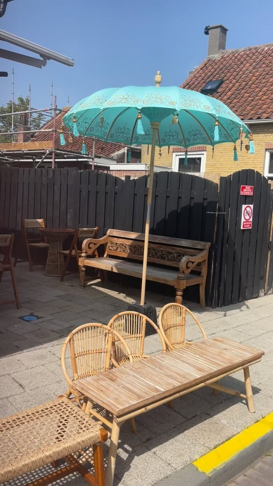
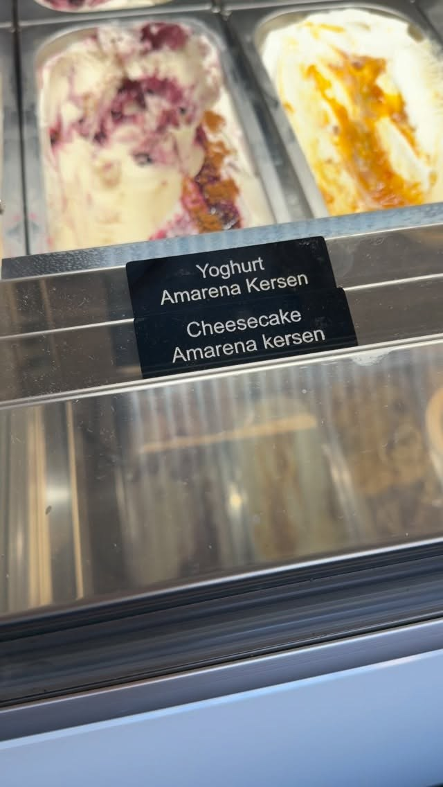
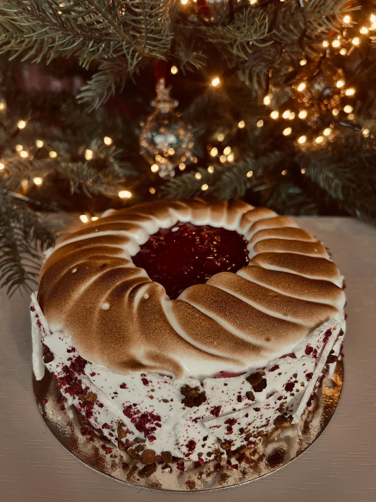
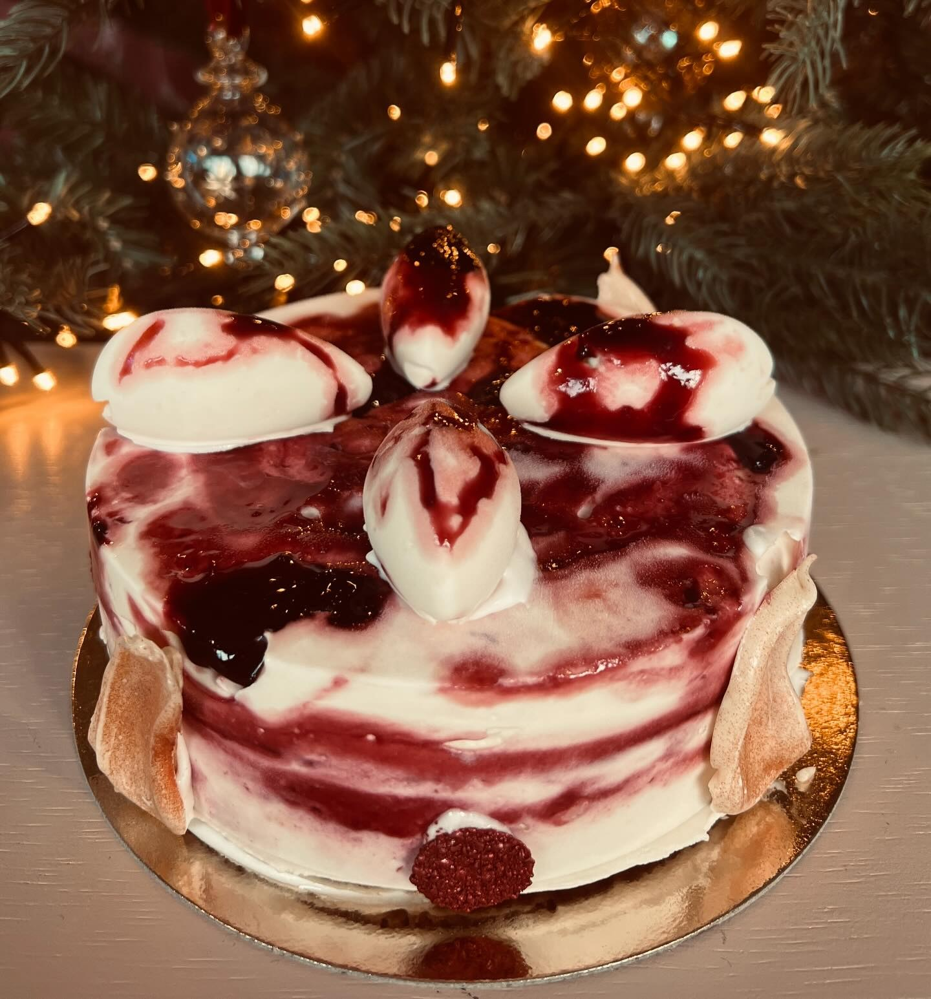
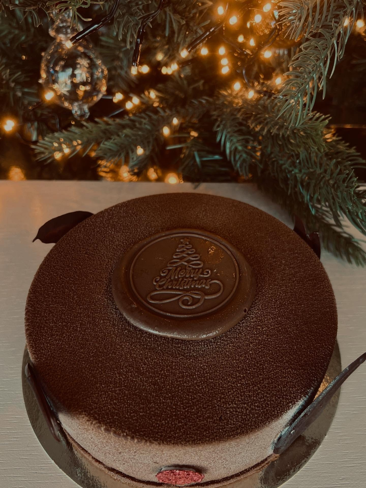
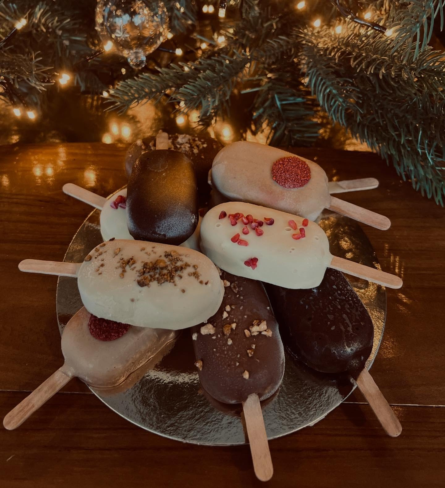

Ambachtelijk schepijs in Sint-Annaland
Schepijs van Tom's IJs, voor op ons terras aan de Schoolstraat of mee naar huis. Ook voor een ijscoupe, ijskoffie of een halve liter voor in de vriezer.

Onze smaken
Al ons schepijs komt van Tom's IJs, ambachtelijk gemaakt in de eigen ijskeuken in Bruinisse. In de vitrine staat elke dag een wisselende selectie, van de klassiekers tot de Zeeuwse bolus.
De smaken van vandaag delen we ook op Facebook.
Meer dan een bolletje
Lekker op het terras, of om mee te nemen.
IJscoupes
Het Zomerkoninkje, Caramel Meringue, of een klassieker als Dame Blanche en Peach Melba.
IJskoffie
Koffie met ijs en slagroom, voor de warme dagen.
Halve liters
Je favoriete smaak mee naar huis, voor in de vriezer. Ook in grote bakken.
To go
Geen tijd om te zitten? Je ijsje of coupe gaat ook mee in een beker.
IJstaarten voor de feestdagen
Ook in de winter kun je bij ons terecht voor ijs: rond kerst bestel je ijstaarten en ijsgebak van Tom's IJs en haal je ze op bij Het IJsschuurtje.




Kom langs
Je vindt ons aan de Schoolstraat 2A in Sint-Annaland. Met terras, en alles kan ook mee.
Het IJsschuurtje
Ambachtelijk schepijs van Tom's IJs
Openingstijden
WinterstopHet ijsseizoen 2026 zit erop: sinds 12 september zijn we dicht. In het seizoen staan hier onze openingstijden, altijd actueel, zodat je nooit voor een dichte deur staat.